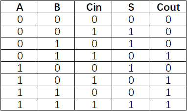
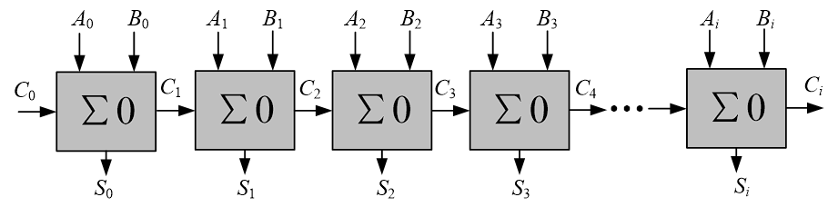
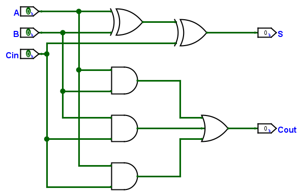
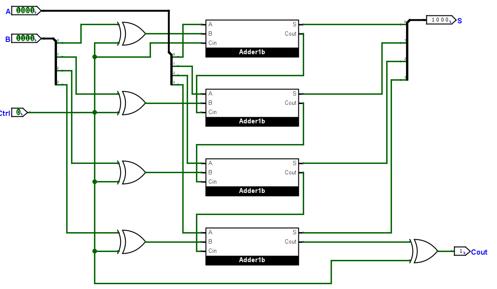
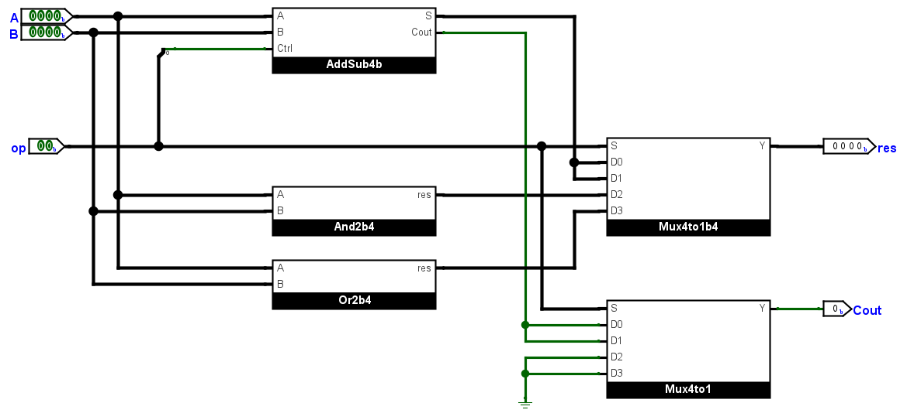
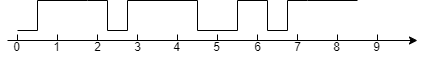

算术逻辑单元
背景介绍
算术逻辑单元
算术逻辑单元（Arithmetic Logic Unit，下称 ALU）是一种对二进制整数执行算术运算（加法、减法等）或位运算（与、或、异或等）的组合逻辑数字电路。我们主要关注的信号是两个操作数输入、运算结果输出以及操作码输入，操作码输入主要是用来选择 ALU 进行运算的种类。除了上述端口，还有各类状态信号，比如进位信号、零信号、溢出信号、奇偶校验结果等，主要是对计算结果的特征进行说明。
全加器
全加器将两个二进制数 A, B 和一个进位输入 Cin 相加，得到一个和输出 S 以及一个进位输出 Cout。
一位全加器
根据一位全加器功能，很容易得到其真值表：

根据真值表，可以获得输出 S, Cout 关于输入 A, B, Cin 的函数：
\[
\begin{align}
S &= A \oplus B \oplus C_{in} \\
C_{out} &= AB + BC_{in} + AC_{in}
\end{align}
\]
行波加法器
将 N 个一位全加器“依次相连”来拓展位宽，可以得到 N 位行波加法器，其模式图如下：

超前进位加法器
行波加法器的组合时延会随着位宽拓展线性增加，其时延代价较大。使用超前进位加法器可以减少高位宽加法器的时延，感兴趣的同学可以查看超前进位加法器。
加减法器
在得到全加器实现后，可以为其添加一些逻辑实现加减法器。减法 A-B 可以看作 A+(-B)，其中 -B 使用 B 的补码表示，即可使用全加器得到减法的结果。
加减法器实现
一位全加器
必须使用原理图完成
模块 Adder1b 必须使用原理图完成
根据背景介绍中得到的布尔表达式，我们可以使用以下电路图实现一位全加器：

请确保模块定义为：
| module Adder1b(
input A,
input B,
input Cin,
output S,
output Cout
)
|
四位加减法器
必须使用原理图完成
模块 AddSub4b 必须使用原理图完成
根据背景介绍，减数 B 的补码可以写作 ~B + 1。观察加法的 B 与减法的 -B，差别在于加法器第二个操作数是否取反以及是否有最低的进位，联想到异或操作的特性（一个操作数为 1 时，结果为另一个操作数的反；一个操作数为 0 时，结果与另一个操作数相同），可以得到以下原理图：
原理图

请确保模块定义为：
| module AddSub4b(
input [3:0] A,
input [3:0] B,
input Ctrl,
output[3:0] S,
output Cout
)
|
ALU 实现
本节将实现一个简单的 4 位 ALU，进行加减法、与、或操作。模块定义为：
| module ALU(
input [3:0] A,
input [3:0] B,
/////// op: 0 for ADD; 1 for SUB; 2 for AND; 3 for OR ///////
input [1:0] op,
output[3:0] res,
output Cout // 0 when AND & OR
)
|
如果你希望通过原理图的方式实现，请自行绘制 And2b4 与 Or2b4 两个模块，模块功能为 4 位输入按位与/或，原理图如下：
原理图

请自行设计仿真文件，对 ALU 进行仿真，要求每个操作使用至少两组数据，需要注意对加减法的边界数据进行测试。
ALU 简单应用
去抖动模块
因为按键过程中会有机械原因导致的信号抖动，在上个实验中也可以观察到，一次按下按钮数字会跳动多次。我们可以实现一个去抖动模块，当信号稳定一段时间后才更改信号值。代码如下：
| module pbdebounce(
input wire clk,
input wire button,
output reg pbreg
);
reg [7:0] pbshift;
always@(posedge clk) begin
pbshift = pbshift<<1;
pbshift[0] = button;
if (pbshift==8'b0)
pbreg=0;
if (pbshift==8'hFF)
pbreg=1;
end
endmodule
|
七段数码管静态显示
我们希望使用 SWORD 板上的 8 个七段数码管，它接收串行数据以减少管脚使用。其实先已经全部提供在附件中。我们需要一个模块将 64 位的七段数码管数据转换为 1 位串行输出以及相应的同步信号，即并转串模块 P2S，因为后续实验中需要独立完成该模块，在本实验中只提供接口文件与用于综合的 EDIF 格式文件，你只需要将 P2S_io.v 和 P2S.edf 添加进工程即可，需要注意将工程中 P2S.edf 的文件格式设置为 EDIF（右键文件选择 Set file type）。
CreateNumber 模块
在本模块中使用 AddSub4b 模块，实现按键自增/自减。
new CreateNumber
| /*
Module Name: CreateNumber
Description:
To change the value printed on Arduino using btns.
You will get a initial value printed as the para. INIT_HEXES defined.
After each pression on btn, a number will increase by 1.
This new module can handle i-1 when signal sw is 1
*/
module CreateNumber#(
parameter INIT_HEXES = 16'b1010_1011_1100_1101 // Init with "AbCd"
) (
input[3:0] btn,
input[3:0] sw,
output reg[15:0] num
);
wire[3:0] A, B, C, D;
initial num <= INIT_HEXES;
// D(the next num[3:0]) is always greater than current num[3:0] by 1
AddSub4b a0(.A(num[15:12]), .B(4'b0001), .Ctrl(sw[3]), .S(A));
AddSub4b a1(.A(num[11: 8]), .B(4'b0001), .Ctrl(sw[2]), .S(B));
AddSub4b a2(.A(num[ 7: 4]), .B(4'b0001), .Ctrl(sw[1]), .S(C));
AddSub4b a3(.A(num[ 3: 0]), .B(4'b0001), .Ctrl(sw[0]), .S(D));
// When pressing btn[0] num[3:0]++
always @(posedge btn[3]) num[15:12] <= A;
always @(posedge btn[2]) num[11: 8] <= B;
always @(posedge btn[1]) num[ 7: 4] <= C;
always @(posedge btn[0]) num[ 3: 0] <= D;
endmodule
|
顶层模块
本模块中调用的子模块说明：
clkdiv：时钟分频模块，直接使用 Lab7 提供的代码。pbdebounce, CreateNumber：使用本实验实验指导提供的代码。ALU：使用你在本实验中完成的模块。DisplayNumber：使用你在 Lab7 中完成的模块，并引入其子模块。Sseg_Dev：静态译码模块，使用附件中的模块。
顶层模块代码：
Top
| module Top(
input wire clk,
input wire [1:0] BTN,
input wire [1:0] SW1,
input wire [1:0] SW2,
input wire [11:0] SW,
output wire [3:0] AN,
output wire [7:0] SEGMENT,
output wire BTNX4,
output wire seg_clk,
output wire seg_clrn,
output wire seg_sout,
output wire SEG_PEN
);
wire [15:0] num;
wire [1:0] btn_out;
wire [3:0] res;
wire Co;
wire [31:0] clk_div;
wire [15:0] disp_hexs;
wire [15:0] disp_hexs_my;
assign disp_hexs[15:12] = num[7:4]; // B
assign disp_hexs[11:8] = num[3:0]; // A
assign disp_hexs[7:4] = {3'b000, Co};
assign disp_hexs[3:0] = res[3:0]; // C
/* Code here */
assign disp_hexs_my = (); // Fill the last four digits of your student id in ()
assign BTNX4 = 1'b0;
clkdiv m2(.clk(clk), .rst(0), .div_res(clk_div));
pbdebounce m0(.clk(clk_div[17]), .button(BTN[0]), .pbreg(btn_out[0]));
pbdebounce m1(.clk(clk_div[17]), .button(BTN[1]), .pbreg(btn_out[1]));
CreateNumber m3(.btn({2'b0, btn_out}), .sw({2'b0, SW1}), .num(num)); // Attachment
// The ALU module you wrote
ALU m5( .A(num[3:0]),
.B(), // fill sth. in ()
.op(), // fill sth. in ()
.res(), // fill sth. in ()
.Cout(Co));
// Module you design in Lab7
DisplayNumber m6( .clk(clk), .hexs(disp_hexs), .LEs(), // fill sth. in ()
.points(SW[3:0]), .rst(), // fill sth. in ()
.AN(AN), .SEGMENT(SEGMENT));
// Attachment
Sseg_Dev m7(.clk(clk), .flash(clk_div[25]), .Hexs({disp_hexs_my, disp_hexs}), .LES(SW[11:4]),
.point({4'b0000, SW[3:0]}), .rst(1'b0), .Start(clk_div[20]), .seg_clk(seg_clk),
.seg_clrn(seg_clrn), .SEG_PEN(SEG_PEN), .seg_sout(seg_sout));
endmodule
|
你需要阅读代码并填写代码中的留空，请注意使得七段数码管高位（左边 4 个）显示你学号的后四位（比如学号 3220102333 的同学需要打印 2333）。
使用约束文件，生成比特流并下板进行验证。
实验报告要求
加减法器实现
- 模块
Adder1b 原理图截图。
- 模块
AddSub4b 原理图截图。
ALU 实现
- 模块
ALU 原理图截图或代码。
- 仿真文件代码，仿真波形与解释。
ALU 简单应用
- 完成后，截图工程中的文件结构，即 Lab4 中要求的截图。
- 拍摄下板现象，证明你实现了完整的功能。
思考题
请阅读 pddebounce 代码并分析以下几种情况，说明输出是否变化并解释，进而说明这一模块如何实现“去抖动”功能的：
-
连续 8 个时钟正边沿到来时，button 为高电位。
-
连续 8 个时钟正边沿到来时，button 为低电位。
-
原输出 pbreg 为 0，得到的 button 输入如下图（数轴上的数字表示第几次时钟上边沿，0 时刻前输入均为 0）时刻 8 过后的输出为：

-
如果改为下图，则时刻 8 过后的输出为：